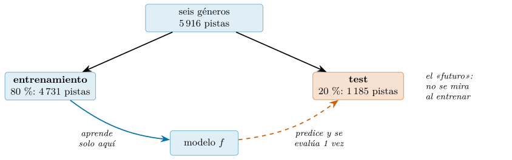
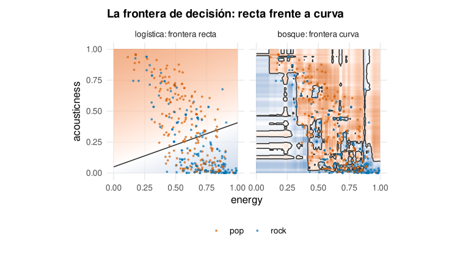
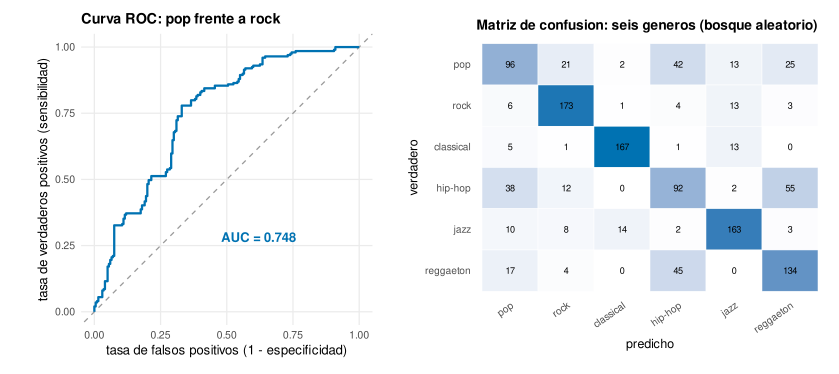
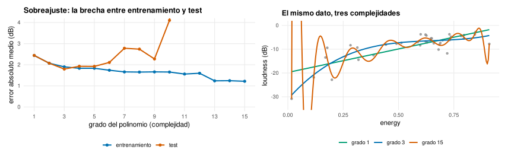
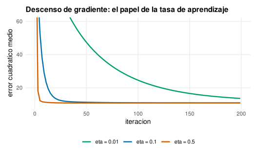
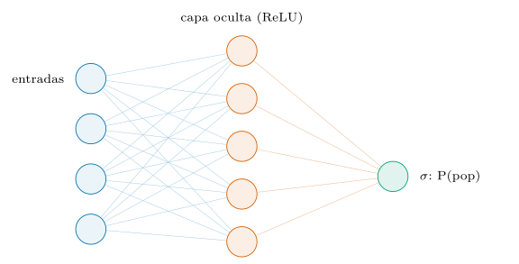
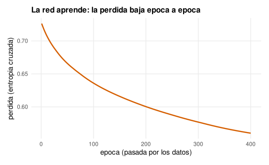
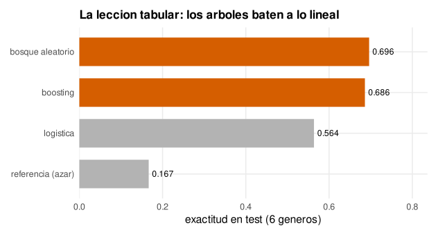

Capítulo 13. Fundamentos del aprendizaje automático
▶ Ejecutar este capítulo en Binder
La primera vez que se abre, Binder construye el entorno en la nube (unos 10-20 min); verás una pantalla de progreso. Después queda en caché y abre en segundos. Si parece que no responde, espera a que termine de construirse o vuelve a intentarlo.
El libro ha recorrido un arco: preparar el entorno, dominar el lenguaje, estructurar los datos, llevarlos a escala, limpiarlos, describirlos, inferir sobre ellos y dibujarlos. Todo ese trabajo tenía un horizonte, y aquí llegamos a él. Describir contesta a «¿qué hay en los datos?»; inferir, a «¿qué población los generó?»; modelar contesta a una pregunta distinta y más ambiciosa: «¿qué puedo predecir sobre los datos que aún no he visto?». Un modelo es una función aprendida de los ejemplos del pasado para acertar en los del futuro, y construir esa función —medirla con honradez, entender cuándo funciona y cuándo se engaña— es el oficio del aprendizaje automático (machine learning).
R no es un invitado en esta sala: es de la casa. El lenguaje lo diseñaron dos estadísticos (cap. 1), la modelización estadística está en su núcleo desde el primer día, y la interfaz de fórmula —y ~ x1 + x2, que ya asomó en el cap. 6— es la lengua materna con la que R habla de modelos. Sobre esa base, un ecosistema moderno —tidymodels, con parsnip, recipes, rsample y yardstick— ofrece una gramática del modelado tan coherente como la de ggplot2 lo era para los gráficos. Este capítulo pone los cimientos; el cap. 14 construye sobre ellos el flujo de trabajo completo.
Conviene deshacer de entrada un malentendido, porque contamina la manera de acercarse al campo. El aprendizaje automático suele llegar envuelto en una promesa exagerada —máquinas que «aprenden solas», inteligencia que emerge de los datos— y esa retórica esconde lo que de verdad es: una rama de la estadística aplicada, disciplinada y a menudo modesta, donde los avances vienen de medir con cuidado y desconfiar de los resultados demasiado buenos. No hay magia. Un modelo es una función que minimiza un error sobre unos datos; su «inteligencia» es la de la geometría y el cálculo que este libro ya ha puesto, y su fiabilidad depende por completo de una higiene —partir los datos, medir en lo no visto, vigilar el sobreajuste— que no tiene nada de espectacular y todo de decisivo. Quien se acerca al aprendizaje automático esperando hechizos se decepciona o, peor, se engaña con sus propios resultados; quien lo entiende como estadística rigurosa sobre datos abundantes saca de él todo su considerable poder sin caer en sus trampas.
El plan es deliberado. Construiremos los modelos dos veces: primero a mano, con el álgebra del cap. 7, para ver qué hay dentro; luego con las herramientas que los resuelven en una línea, para usarlos de verdad. Empezaremos por la regresión lineal —el modelo más simple y más instructivo—, seguiremos por la clasificación y sus métricas, nos enfrentaremos al enemigo central de todo el campo —el sobreajuste—, destaparemos el motor que entrena casi todo modelo moderno —el descenso de gradiente—, construiremos una red neuronal desde cero y la reharemos con torch, y cerraremos con la lección más importante y menos glamurosa del aprendizaje automático en 2026: sobre datos tabulares, lo simple casi siempre gana. Todo, sobre el mismo catálogo de música que nos ha acompañado, con cifras reales regeneradas en R.
La formulación del aprendizaje supervisado
El aprendizaje supervisado (supervised learning) arranca de un material muy concreto: ejemplos ya resueltos. De cada observación conocemos tanto sus atributos de entrada como el resultado que le corresponde, y la tarea es destilar de ese historial una regla que anticipe el resultado de casos futuros. Formalizado, el material es una matriz de características (features) \(\mathbf{X}\) con forma \((n, d)\) —las \(n\) observaciones ocupan las filas y las \(d\) variables las columnas— acompañada de un vector de respuestas \(\mathbf{y}\) con \(n\) componentes. Se busca una función \(f\) que cumpla \(f(\mathbf{x}) \approx y\), pero con una exigencia que lo cambia todo: que acierte en observaciones futuras, no en las ya conocidas, donde acertar es trivial. Ese matiz —entre reproducir lo visto y anticipar lo no visto— es la médula del capítulo.
La naturaleza de la respuesta bautiza el problema. Cuando \(y\) es una cantidad continua —el volumen de una pista, medido en decibelios— estamos ante una regresión. Cuando \(y\) es una etiqueta de un catálogo finito —a qué género pertenece la pista— ante una clasificación. Bajo esa diferencia de superficie late una misma maquinaria —unos datos, una función que ajustar, una vara para medir el fallo—, y por eso el capítulo aborda ambos casi de la mano: los conceptos que se ganan en uno se trasladan casi sin cambio al otro.
El apellido «supervisado» distingue este marco de otros dos que conviene situar, aunque queden fuera del capítulo. En el aprendizaje no supervisado no hay respuesta \(y\): solo la matriz \(\mathbf{X}\), y el objetivo es descubrir estructura —agrupar observaciones parecidas (clustering), reducir la dimensión (como el análisis de componentes principales que ya asomó en el cap. 7)— sin nadie que diga qué es correcto. En el aprendizaje por refuerzo, un agente aprende a actuar en un entorno maximizando una recompensa que llega con retraso, el marco de los sistemas que juegan al ajedrez o conducen. El supervisado —aprender de ejemplos etiquetados— es, con diferencia, el más usado y el mejor entendido, y por eso es el corazón de este capítulo y del siguiente; los otros dos son territorios propios que este libro solo señala en el mapa. Que exista una respuesta conocida contra la que medirse es, precisamente, lo que hace del supervisado el terreno donde las ideas de generalización, error y validación se ven con más nitidez. Para la teoría estadística completa detrás de cada modelo, el tratamiento moderno y asequible es James et al. (2023), y el clásico exhaustivo, Hastie et al. (2009).
Conviene, antes de tocar un solo modelo, un armazón mental que ordena todo el campo. Cualquier modelo de aprendizaje supervisado —la regresión, la logística, la red neuronal, el boosting— se descompone en tres ingredientes, y elegir un modelo es elegir los tres. El primero es la familia de funciones: qué forma puede tener \(f\) —una recta, un polinomio, una composición de capas, un conjunto de árboles—, es decir, cuánta flexibilidad se le concede. El segundo es la función de pérdida (loss): cómo se mide el error de una predicción —el error cuadrático para la regresión, la entropía cruzada para la clasificación—, que traduce «acertar» en un número que se pueda minimizar. Y el tercero es el algoritmo de optimización: cómo se busca, dentro de la familia, la función que minimiza esa pérdida —una fórmula cerrada cuando la hay, el descenso de gradiente cuando no—. Casi todo lo que este capítulo enseña encaja en una de estas tres casillas, y tenerlas presentes evita el error del principiante, que confunde el modelo (la familia) con su entrenamiento (la optimización) o con su evaluación (que no es ninguno de los tres, sino el juicio externo sobre el resultado). Modelo, pérdida, optimización: tres piezas, y el resto son combinaciones.
La generalización y la partición
Lo que separa el modelado de la simple descripción tiene nombre: generalización (generalization). Un modelo que repita al pie de la letra los datos disponibles no aporta nada —para eso sobra con archivarlos y consultarlos—; lo que se le pide es acertar donde aún no ha mirado. Reproducir el pasado con fidelidad y tropezar con el futuro no es aprender, es calcar. De ahí se sigue una consecuencia incómoda: evaluar un modelo con los mismos ejemplos que usó para ajustarse no informa de nada, porque confunde recordar con comprender.
Por eso la primera operación de todo proyecto es cortar los datos en dos bloques. El primero, el de entrenamiento (train), es el único territorio que el modelo pisa: de él extrae sus parámetros. El segundo, el de prueba o test, se guarda bajo llave hasta el desenlace; hace las veces de porvenir —observaciones que todavía no han ocurrido— y su papel es exclusivamente el de juez. Es la misma frontera que el cap. 10 levantó al tratar la fuga de datos: dejar que el test influya en cualquier decisión —qué modelo, qué umbral, qué parámetro— lo convierte en cómplice del entrenamiento, y esa contaminación es la fuga más traicionera de todas, porque hincha las cifras en silencio, sin disparar ninguna alarma. De ahí una norma sin excepciones: al test no se le mira hasta que ya no queda ninguna decisión pendiente.
En R, con rsample (una pieza de tidymodels), el corte cabe en una instrucción. Lo aplicamos al conjunto que vertebra el capítulo —seis géneros en proporciones parejas, presentado en la §13.1.2—:
library(rsample); library(dplyr)
generos <- c("pop", "rock", "classical", "hip-hop", "jazz", "reggaeton")
sub <- musica |> filter(track_genre %in% generos) |>
mutate(track_genre = factor(track_genre, levels = generos))
set.seed(2026)
division <- initial_split(sub, prop = 0.8, strata = track_genre)
entrena <- training(division) # el modelo aprende SOLO aqui
prueba <- testing(division) # el "futuro": no se toca hasta evaluar
c(train = nrow(entrena), test = nrow(prueba))
#> train test
#> 4731 1185Apartamos el 20 % —1 185 pistas— para el test y dejamos las 4 731 restantes para aprender. Al estratificar por género (strata = track_genre) cada uno mantiene su peso a ambos lados de la raya; y la semilla fija (set.seed(2026)) vuelve el corte repetible, requisito para que las cifras del capítulo salgan idénticas en la máquina del lector —con la salvedad del cap. 7: ese reparto es el del generador de R, y no viaja a otros lenguajes—. La figura 13.1 sintetiza el pacto: el ajuste ocurre íntegramente en el bloque de entrenamiento y el veredicto, una única vez, en el de test.

El dataset del capítulo: la música con señal real
Cabe aquí una nota de transparencia, coherente con la política de datos del cap. 10. Usamos una porción balanceada de seis géneros del catálogo de Spotify —mil pistas por género, descontados los duplicados por clave natural, 5 916 al final—, con sus rasgos de audio auténticos: energía, bailabilidad, volumen, acústica, positividad, tempo y demás. La señal es genuina pero débil: los géneros se solapan mucho en el espacio de rasgos —hay pop enérgico y rock tranquilo, jazz bailable y reggaetón acústico—, así que ningún modelo va a rozar el acierto perfecto, y eso es exactamente lo que queremos. Un problema demasiado fácil (donde todo acierta al 99 %) no enseña nada sobre modelado; uno con señal parcial —donde el azar acierta uno de cada seis y un buen modelo llega al setenta por ciento— obliga a medir con cuidado, a distinguir el modelo que generaliza del que memoriza, y a entender por qué unos rasgos predicen y otros no. La música, aquí, es un banco de pruebas honrado: real, imperfecto y suficientemente difícil para que las lecciones del capítulo se vean.
Regresión lineal: desde cero y con lm
Empezamos por el modelo más sencillo y, a la vez, el más instructivo. La regresión lineal estima la respuesta sumando las características de cada observación, cada una con su peso: \[\hat{y} = \mathbf{x}^\top\mathbf{\beta} + b,\] donde \(\mathbf{x}\in\mathbb{R}^{d}\) agrupa los \(d\) rasgos de una observación, \(\mathbf{\beta}\in\mathbb{R}^{d}\) los pesos (uno por rasgo) y \(b\) desplaza el conjunto (el término independiente). Entrenar es dar con la pareja \(\mathbf{\beta}\), \(b\) que deja lo más pequeño posible el error cuadrático medio (ECM) sobre el entrenamiento, \[\mathrm{ECM}(\mathbf{\beta}, b) = \frac{1}{n}\sum_{i=1}^{n}\bigl(y_i - \hat{y}_i\bigr)^2,\] la media de los residuos \(y_i-\hat{y}_i\) elevados al cuadrado. Nada de misterio: ajustar una regresión lineal es un problema de optimización con receta conocida, y lo resolveremos a mano antes de encargárselo a R. Ponemos por objetivo el volumen de la pista (loudness, en decibelios) y lo estimamos con cuatro rasgos —energía, acústica, bailabilidad y positividad—.
La ecuación normal
Minimizar el ECM sale especialmente barato: como es una función cuadrática y convexa de \(\mathbf{\beta}\), basta anular su gradiente para dar con el mínimo, y ese requisito se traduce en un sistema lineal con solución explícita, la ecuación normal. Colocando cada observación de entrenamiento en una fila de la matriz \(\mathbf{X}\) —con una columna de unos que se traga el término independiente— y los objetivos en \(\mathbf{y}\), el \(\mathbf{\beta}\) que buscamos satisface \[(\mathbf{X}^\top\mathbf{X})\,\mathbf{\beta} = \mathbf{X}^\top\mathbf{y}.\] Aquí recogemos el hilo del cap. 7: aquel producto matricial \(\mathbf{X}^\top\mathbf{X}\) es el crossprod que vimos allí, y resolver el sistema no exige invertir la matriz —más lento y menos estable—: solve(A, b) lo hace directamente. Dos funciones resumen el modelo: ajustar_lineal (aprende \(\mathbf{\beta}\)) y predecir_lineal (lo aplica).
feats <- c("energy", "acousticness", "danceability", "valence")
Xtr <- as.matrix(entrena[feats]); ytr <- entrena$loudness
ajustar_lineal <- function(X, y) {
Xb <- cbind(1, X) # columna de unos para el termino b
solve(crossprod(Xb), crossprod(Xb, y)) # resuelve (X'X) beta = X'y
}
predecir_lineal <- function(X, beta) cbind(1, X) %*% beta
beta <- ajustar_lineal(Xtr, ytr)
round(beta, 2)
#> [1] -22.02 18.89 -0.46 5.90 -1.67
# b energy acoust. dance. valenceCon una decena de líneas ha quedado entrenado un modelo real: solve entrega los cinco valores —el desplazamiento y los cuatro pesos— que minimizan el ECM del volumen. Esos cinco valores constituyen el modelo entero; predecir se reduce a multiplicarlos por los rasgos y sumar.
Con lm: la interfaz de fórmula
Escribir la ecuación normal a mano es didáctico, pero en la práctica no reinventamos la rueda. R trae la regresión lineal desde su primer día en la función lm, y con ella la interfaz de fórmula que anunciamos: el modelo se declara como loudness ~ energy + acousticness + …, leyendo la tilde como «se explica por». Esta interfaz —nativa de R, envidiada y copiada por otros lenguajes— es una de las razones de que el modelado en R fluya, y la compartirán todos los modelos del capítulo: cambiar de modelo apenas cambia una palabra, no el resto del código.
library(yardstick)
ajuste <- lm(loudness ~ energy + acousticness + danceability + valence,
data = entrena)
# los coeficientes coinciden EXACTAMENTE con la ecuacion normal:
all.equal(unname(coef(ajuste)), as.numeric(beta)) #> TRUE
# evaluar en el test: predecir y medir con yardstick
prueba$pred <- predict(ajuste, prueba)
metricas <- metric_set(mae, rmse, rsq)
metricas(prueba, truth = loudness, estimate = pred)
#> mae 2.38 rmse 3.29 rsq 0.740all.equal devuelve TRUE: nuestra ecuación normal y lm llegan al mismo sitio, porque resuelven el mismo problema. Y yardstick —el paquete de métricas de tidymodels— resume el ajuste sobre el test en tres cifras: un error absoluto medio (MAE) de 2,38 dB, una raíz del error cuadrático (RMSE) de 3,29 dB, y un coeficiente de determinación \(R^2\) de 0,740, es decir, el modelo explica el 74 % de la varianza del volumen. Que el MAE de test (2,38) sea prácticamente igual al de entrenamiento (2,38 también) es una buena señal —el modelo no memoriza, generaliza—, y es lo que esperamos de un modelo tan rígido; en la sección de sobreajuste veremos qué pasa cuando el modelo tiene demasiada libertad.
Las tres métricas no son intercambiables, y elegir entre ellas es una decisión, no un detalle. El MAE promedia los errores en valor absoluto: es robusto, fácil de interpretar —«nos equivocamos 2,38 dB de media»— y trata todos los errores por igual. El RMSE promedia sus cuadrados y saca la raíz: penaliza mucho más los errores grandes, así que un puñado de predicciones muy malas lo disparan, y por eso el RMSE (3,29) es mayor que el MAE (2,38) —la diferencia entre ambos es, de hecho, una pista de cuánta cola tienen los errores—. ¿Cuál usar? El RMSE si un error grande es desproporcionadamente peor que varios pequeños (predecir mal la carga de un puente); el MAE si todos los errores cuestan en proporción a su tamaño. El \(R^2\), por su parte, no está en unidades del objetivo sino en fracción de varianza explicada, y sirve para comparar entre problemas de escalas distintas, aunque engaña si se olvida que un \(R^2\) alto no garantiza predicciones útiles ni relación causal. Informar de una sola métrica es dar media imagen; las tres juntas cuentan cuánto, cómo de disperso y en qué proporción se acierta.
Interpretabilidad: qué dice el modelo
Un modelo lineal no solo predice: explica, y esa es su mayor virtud frente a los modelos más potentes que vendrán. Cada coeficiente es la variación esperada del objetivo por cada unidad de la característica, manteniendo las demás fijas. Pero los coeficientes en bruto engañan al comparar, porque cada rasgo tiene su propia escala: la energía y la positividad van de 0 a 1, el tempo llega a 200. Para comparar la importancia de los rasgos se estandarizan —se multiplica cada coeficiente por la desviación típica de su rasgo—, obteniendo el efecto en decibelios de un cambio de una desviación típica:
sdx <- apply(Xtr, 2, sd)
round(beta[-1] * sdx, 2) # efecto de +1 desviacion tipica, en dB
#> energy acousticness danceability valence
#> 4.89 -0.16 1.08 -0.41Ahora la lectura es directa y honesta: la energía domina —subir una desviación típica de energía sube casi 5 dB el volumen previsto—, la bailabilidad ayuda algo (+1,08), y la acústica y la positividad apenas mueven la aguja. Tiene sentido físico: las pistas enérgicas son las que suenan fuerte. Esta capacidad de mirar dentro y entender qué pesa es lo que hace del modelo lineal el primer recurso del analista, y lo que se pierde —o se recupera con esfuerzo, cap. 14— al subir a modelos más opacos. La regla de oficio: empieza por el modelo que puedes explicar, y sube de complejidad solo cuando el dato demuestre que hace falta.
Un modelo lineal, además, no se juzga solo por su error: se diagnostica. R lo hereda de su tradición estadística, y plot(ajuste) sobre un objeto lm produce cuatro gráficos de residuos que el cap. 12 enseñó a leer. El más importante enfrenta los residuos a los valores previstos: si el modelo es adecuado, deben esparcirse sin patrón alrededor de cero; una curva sugiere que la relación no era lineal (falta un término cuadrático, o una transformación), y un embudo que se abre delata que la varianza crece con la magnitud —incumpliendo una hipótesis del método—. Mirar los residuos antes de creerse el \(R^2\) es la contrapartida, en el modelado, del «dibuja antes de resumir» del cap. 12: un buen ajuste numérico con residuos con forma es un modelo que miente en algún tramo, y solo el gráfico lo delata. Este hábito —diagnosticar, no solo medir— es lo que distingue el uso estadístico de R de la aplicación mecánica de un algoritmo.
Clasificación: predecir una categoría, medir el acierto
Cambiamos de problema: en vez de un número, predecimos una categoría. ¿Es esta pista pop o rock? El modelo de referencia para la clasificación binaria es la regresión logística, que no es una regresión sino un clasificador con un nombre heredado. La idea: en vez de predecir directamente la clase, predice la probabilidad de una de ellas, pasando la combinación lineal de siempre por la función sigmoide \(\sigma(z) = 1/(1+e^{-z})\), que aplasta cualquier número real al intervalo \((0,1)\). Se decide «pop» si esa probabilidad supera un umbral (0,5 por defecto). En R es glm con family = binomial, otra vez la interfaz de fórmula.
Que la logística prediga probabilidades y no clases directamente no es un capricho, y conecta con los tres ingredientes de la §13.1. Su pérdida —lo que minimiza al entrenar— no es la exactitud, sino la entropía cruzada (log loss), que penaliza no solo acertar o fallar, sino la confianza con que se falla: equivocarse diciendo «90 % pop» cuesta muchísimo más que dudando «55 % pop». Hay una razón para no usar la exactitud como pérdida: es una función escalonada —cambia a saltos cuando una predicción cruza el umbral— y por tanto tiene gradiente cero casi en todas partes, inservible para el descenso de gradiente que veremos en la §13.5. La entropía cruzada, en cambio, es suave y derivable, y premia acercar las probabilidades a la verdad. Es un patrón general del campo: se optimiza una pérdida suave (entropía cruzada, error cuadrático) que sirve de sustituto entrenable de la métrica que de verdad importa (exactitud, F1), y esa distinción entre pérdida que se minimiza y métrica que se evalúa es una de las que más confunden al principiante.
dos <- sub |> filter(track_genre %in% c("pop", "rock")) |>
mutate(clase = factor(track_genre, levels = c("rock", "pop")))
set.seed(2026)
div <- initial_split(dos, prop = 0.8, strata = clase)
tr <- training(div); te <- testing(div)
ajuste <- glm(clase ~ danceability + energy + loudness + speechiness +
acousticness + valence + tempo, data = tr, family = binomial())
te$prob <- predict(ajuste, te, type = "response") # P(pop)
te$pred <- factor(ifelse(te$prob > 0.5, "pop", "rock"),
levels = c("rock", "pop"))
accuracy(te, truth = clase, estimate = pred) #> 0.664El modelo acierta el 66,4 % de las 399 pistas de test. Suena modesto, y lo es —pop y rock comparten mucho territorio sonoro—, pero conviene compararlo con lo que acertaría el azar sensato: como las dos clases están equilibradas, apostar siempre por la mayoritaria daría 50,2 %. El modelo, pues, saca 16 puntos a la moneda: ha aprendido algo real, aunque no mucho.
Como el modelo lineal, la logística también se explica, aunque su lectura es menos directa. Sus coeficientes no están en unidades de probabilidad —que no crece de forma lineal— sino de log-momios (log-odds): un coeficiente positivo empuja la probabilidad hacia arriba, uno negativo hacia abajo, y su exponencial es la razón de momios, cuánto multiplica las apuestas a favor de pop un aumento de una unidad en ese rasgo. Un coeficiente de energy positivo, por ejemplo, diría que a más energía más probabilidad de que el modelo cante «pop». No hay que memorizar la mecánica —coef(ajuste) los da y broom::tidy los ordena con sus intervalos—, pero sí retener la idea: la logística conserva la interpretabilidad del modelo lineal, solo que en la escala de los momios, y por eso sigue siendo la primera parada en clasificación cuando hace falta entender, no solo acertar.
Hay una imagen geométrica que aclara qué hace un clasificador y por qué unos ganan a otros: la frontera de decisión. Piensa en las pistas como puntos en el espacio de sus rasgos —cada pista, una posición según su energía, su acústica, etcétera— coloreados por su género. Clasificar es trazar fronteras en ese espacio que separen los colores, y predecir es mirar a qué lado de la frontera cae un punto nuevo. La regresión logística solo puede trazar fronteras rectas (hiperplanos): si los géneros se separan por una línea, acierta; si la frontera real serpentea, no puede seguirla, por muchos datos que reciba —ese es su límite, y la razón de su modesto 66 %—. Una red neuronal o un árbol trazan fronteras curvas, arbitrariamente retorcidas, y por eso capturan relaciones que la logística no alcanza. Toda la jerarquía de modelos del capítulo se puede leer así: como una escalera de fronteras cada vez más flexibles, de la recta de la logística a las curvas de la red, con el precio —más flexibilidad, más riesgo de sobreajustar— que ya conocemos. Elegir modelo es, en el fondo, elegir cuánta libertad darle a esa frontera (figura 13.2).

Por qué la exactitud no basta
La exactitud (accuracy) —la fracción de aciertos— es la métrica obvia, y a menudo la equivocada. Su trampa se ve en cuanto las clases se desequilibran. Imagina un detector de una enfermedad rara que afecta al 1 % de la población: un modelo que diga «sano» a todo el mundo acierta el 99 % de las veces —exactitud altísima— y es inútil, porque no detecta ni un solo enfermo. La exactitud premia al que no se moja. Para juzgar de verdad un clasificador hay que mirar qué tipo de errores comete, y para eso está la matriz de confusión: una tabla que cruza lo que era con lo que el modelo predijo (figura 13.3 para el caso de seis géneros).
El desequilibrio de clases no es solo un problema de medición —qué métrica usar— sino también de entrenamiento: un modelo que ve mil casos de una clase y diez de otra tenderá a ignorar la rara, porque acertar la común ya minimiza casi toda la pérdida. Hay remedios, y conviene conocerlos aunque nuestro problema esté equilibrado. Se puede remuestrear: replicar ejemplos de la clase rara (oversampling, con métodos como SMOTE que sintetizan casos plausibles) o descartar de la común (undersampling). Se pueden ponderar las clases, diciéndole al modelo que un error en la rara cuesta más —la mayoría de las funciones de R aceptan pesos de clase—. O se puede mover el umbral, como veremos. Ninguno es magia: si la clase rara tiene de verdad poca señal, ningún truco la inventa. Pero ignorar el desequilibrio —entrenar y medir como si las clases importaran por igual cuando no es así— es uno de los errores más caros en problemas reales, donde lo interesante (el fraude, la enfermedad, la avería) suele ser justo lo raro.
conf_mat(te, truth = clase, estimate = pred)
#> Truth
#> Prediction rock pop
#> rock 141 75
#> pop 59 124La diagonal son los aciertos (141 rocks y 124 pops bien clasificados); fuera de ella, los dos tipos de error: 75 pops que el modelo llamó rock (falsos negativos si «pop» es la clase positiva) y 59 rocks que llamó pop (falsos positivos). De esta tabla salen las métricas que sí importan. La precisión (precision) responde a «de lo que el modelo llamó pop, ¿cuánto era pop de verdad?»: \(124/(124+59) = 0{,}678\). La sensibilidad (recall) responde a «de todos los pops reales, ¿cuántos pilló?»: \(124/(124+75) = 0{,}623\). Y el F1 las combina en su media armónica, \(0{,}649\), un único número que castiga desequilibrar una a costa de la otra.
precision(te, clase, pred, event_level = "second") #> 0.678
recall(te, clase, pred, event_level = "second") #> 0.623
f_meas(te, clase, pred, event_level = "second") #> 0.649Precisión y sensibilidad están en tensión: bajar el umbral de 0,5 hace al modelo más generoso declarando pop —sube la sensibilidad (pilla más pops) pero baja la precisión (mete más rocks por error)—, y subirlo hace lo contrario. Qué preferir depende del coste de cada error: un filtro de correo no deseado prioriza la precisión (mejor dejar pasar spam que bloquear un correo bueno); un cribado médico prioriza la sensibilidad (mejor una falsa alarma que un enfermo sin detectar). La métrica correcta es la que refleja ese coste, no la que sale más alta.
El umbral, de hecho, no tiene por qué ser 0,5, y verlo separa al que entiende la clasificación del que la aplica a ciegas. El modelo no decide una clase: produce una probabilidad, y el umbral es una decisión aparte, de negocio, no de estadística. Si cada falso negativo cuesta diez veces más que un falso positivo —un tumor no detectado frente a una biopsia de más—, el umbral óptimo baja muy por debajo de 0,5, para pillar más positivos aun a costa de más falsas alarmas. La curva ROC de la §13.3.2 es precisamente el mapa de todos los umbrales posibles, y elegir el punto de trabajo sobre ella —no aceptar el 0,5 por defecto— es donde el análisis se encuentra con el mundo real y sus costes asimétricos. Un modelo entrega probabilidades; convertirlas en decisiones es un acto que exige saber qué cuesta cada error, y esa información no está en los datos, sino en el problema.
La curva ROC y el AUC
Fijar el umbral en 0,5 es una decisión arbitraria. La curva ROC (receiver operating characteristic) evita comprometerse: barre todos los umbrales posibles y, para cada uno, dibuja la tasa de verdaderos positivos (sensibilidad) frente a la de falsos positivos (figura 13.3). Un clasificador perfecto pasaría por la esquina superior izquierda (todo acierto, ningún falso positivo); uno que apuesta al azar caería sobre la diagonal. El área bajo la curva, el AUC, resume la calidad en un número entre 0,5 (azar) y 1 (perfecto), e interpreta como la probabilidad de que el modelo dé mayor puntuación a un pop tomado al azar que a un rock tomado al azar.
roc_auc(te, truth = clase, prob, event_level = "second") #> 0.748
El AUC de 0,748 confirma lo que ya sabíamos: el modelo distingue pop de rock bastante mejor que el azar, pero lejos de la perfección. Su gran virtud es que no depende del umbral, así que compara modelos de forma limpia: entre dos clasificadores, el de mayor AUC ordena mejor los casos, decidas luego el umbral que decidas. Para más de dos clases —los seis géneros— la exactitud sigue valiendo, y la matriz de confusión se vuelve una rejilla (figura 13.3) que revela no solo cuánto acierta el modelo, sino qué confunde con qué: una lectura diagnóstica que orienta dónde el problema es realmente difícil.
Más de dos clases: la logística multinomial
Distinguir seis géneros no es un problema binario, y la logística se generaliza a él con naturalidad. La regresión logística multinomial aprende un vector de puntuaciones —una por clase— y las convierte en probabilidades que suman uno con la función softmax, la hermana multiclase de la sigmoide: exponencia cada puntuación y la normaliza por la suma de todas. La clase predicha es la de mayor probabilidad. En R está en nnet::multinom, con la misma interfaz de fórmula:
library(nnet)
mult <- multinom(track_genre ~ danceability + energy + loudness + speechiness +
acousticness + instrumentalness + liveness + valence + tempo,
data = entrena, trace = FALSE)
pred <- predict(mult, prueba)
accuracy(tibble(v = prueba$track_genre, p = pred),
truth = v, estimate = p) #> 0.564La logística multinomial acierta el 56,4 % de los seis géneros, muy por encima del 16,7 % del azar (uno de cada seis) pero lejos del techo: la frontera lineal que traza no basta para separar géneros que se solapan tanto. La matriz de confusión de los seis géneros (figura 13.3) recompensa la mirada, porque sus errores no son ruido sino estructura: los géneros que el modelo confunde son justamente los que un oído humano también confundiría. La música clásica, sonora y acústicamente distinta de todo lo demás, casi no se confunde con nada —su fila es la más limpia—; en el otro extremo, el pop se enreda con el hip-hop y el reggaetón, porque comparten rangos de energía y producción, y el hip-hop y el reggaetón se confunden mutuamente. Que los errores del modelo tracen el mismo mapa de parecidos que trazaría un aficionado a la música es una señal de que ha aprendido algo real sobre el sonido, no un patrón espurio; y leer ese mapa —no solo la cifra global— es lo que convierte una evaluación en un diagnóstico, que dice dónde y por qué el problema es difícil, no solo cuánto se acierta. Su matriz de confusión (figura 13.3, dibujada para el bosque que la mejora) es aquí especialmente útil, porque los errores tienen sentido musical —el pop se confunde con el reggaetón, el rock con el hip-hop— y ese patrón, más que la cifra global, dice dónde está la dificultad real. Cuando importa no solo la clase sino su probabilidad —«¿cuán seguro está el modelo?»—, predict(…, type = "prob") devuelve las seis, y esa confianza es materia del cap. 14 (calibración) y del cap. 15 (donde la confianza en la clase real es la señal de un ataque de pertenencia).
Sobreajuste, sesgo y varianza
Llegamos al concepto central de todo el aprendizaje automático, el que separa a quien entiende el campo de quien solo ejecuta recetas. Un modelo con suficiente libertad puede ajustar cualquier conjunto de entrenamiento a la perfección —basta darle bastantes parámetros para que pase por todos los puntos— y, sin embargo, fracasar estrepitosamente en datos nuevos. Eso es el sobreajuste (overfitting): en vez de quedarse con el patrón que se repite fuera de la muestra, el modelo se aprende de memoria hasta las casualidades del entrenamiento. Su opuesto es el subajuste (underfitting): un modelo tan rígido que ni siquiera captura la señal presente. Entre ambos extremos vive el modelo justo, y encontrarlo es el arte.
La brecha entre entrenamiento y test
Veámoslo con un experimento. Predecimos el volumen a partir de un solo rasgo (la energía) con un polinomio de grado creciente —grado 1 es una recta, grado 15 una curva que serpentea—, y para que el sobreajuste se manifieste entrenamos con pocos datos: solo 40 pistas. Medimos el error en el propio entrenamiento y en el test, y observamos la brecha (figura 13.4):
set.seed(2026); peq <- entrena[sample(nrow(entrena), 40), ] # solo 40 pistas
for (g in c(1, 3, 5, 9, 15)) {
aj <- lm(loudness ~ poly(energy, g), data = peq)
e_tr <- mean(abs(peq$loudness - predict(aj)))
e_te <- mean(abs(prueba$loudness - predict(aj, prueba)))
cat(sprintf("grado %2d | MAE train %.3f | MAE test %.3f\n", g, e_tr, e_te))
}
#> grado 1 | MAE train 2.440 | MAE test 2.443
#> grado 3 | MAE train 1.900 | MAE test 1.797
#> grado 5 | MAE train 1.834 | MAE test 1.923
#> grado 9 | MAE train 1.663 | MAE test 2.276
#> grado 15 | MAE train 1.218 | MAE test 127.566El patrón es la lección entera del capítulo condensada en cinco filas. El error de entrenamiento baja sin parar: cuanta más libertad, mejor se ajusta a las 40 pistas que ve. Pero el error de test dibuja una U: mejora del grado 1 al 3 —el modelo captura la relación real, creciente— y a partir de ahí empeora, primero despacio y luego en catástrofe: el grado 15 memoriza tan a fondo las 40 pistas que entre ellas la curva se dispara, y en el test el error absoluto sube a 127 dB, un disparate. La figura 13.4 lo hace visible: la recta (grado 1) es demasiado rígida, el grado 3 acierta la tendencia, y el grado 15 serpentea para tocar cada punto de entrenamiento, prediciendo cualquier cosa entre ellos.

Sesgo y varianza
Detrás de la U hay una descomposición célebre. El error esperado de un modelo en datos nuevos se reparte en tres sumandos: el sesgo (bias), el error por suposiciones demasiado rígidas —la recta que no puede curvarse aunque los datos lo pidan—; la varianza (variance), la sensibilidad del modelo a los datos concretos con que se entrenó —el grado 15, que cambia por completo si le quitas dos puntos—; y un ruido irreducible, la parte del objetivo que ninguna característica explica. Subir la complejidad baja el sesgo pero sube la varianza, y bajarla hace lo contrario: es un compromiso (trade-off), no un problema con solución única. El subajuste es exceso de sesgo; el sobreajuste, exceso de varianza; el modelo justo, el que equilibra ambos —el fondo de la U—. Toda la ingeniería del aprendizaje —más datos, regularización, validación— son formas de gestionar este compromiso.
Y aquí se ve por qué los 40 datos importaban: con las 4 731 pistas completas, el grado 15 no se dispara, porque hay demasiados puntos para serpentear entre ellos —la varianza baja con el tamaño de la muestra—. Más datos es el remedio más fiable contra el sobreajuste, y también el más caro. Cuando no se pueden conseguir más, se recurre a la segunda defensa.
Regularización: penalizar la complejidad
La regularización controla la varianza sin quitar libertad al modelo: le deja muchos parámetros, pero le cobra por usarlos, añadiendo al error un término que penaliza los coeficientes grandes. Hay dos variantes clásicas, las dos en glmnet (Friedman et al. 2010). La ridge (norma \(L_2\)) suma como castigo los coeficientes al cuadrado, y así los arrima a cero sin llegar a apagarlos. La lasso (norma \(L_1\), (Tibshirani 1996)) castiga en cambio la suma de sus valores absolutos, y añade un regalo: empuja algunos coeficientes hasta el cero exacto, de modo que escoge qué características sobreviven —funciona a la vez de modelo y de criba—. La fuerza de la penalización es un hiperparámetro, \(\lambda\), que se elige por validación cruzada (cv.glmnet la hace sola):
library(glmnet)
preds <- c("danceability", "energy", "speechiness", "acousticness",
"instrumentalness", "liveness", "valence", "tempo") # sin loudness
X <- scale(as.matrix(entrena[preds])) # glmnet pide matriz; estandarizar
set.seed(2026)
ridge <- cv.glmnet(X, entrena$loudness, alpha = 0) # alpha=0: ridge
lasso <- cv.glmnet(X, entrena$loudness, alpha = 1) # alpha=1: lasso
c(ridge = ridge$lambda.min, lasso = lasso$lambda.min)
#> ridge 0.5433 lasso 0.0074Sobre este problema —ocho rasgos informativos y casi cinco mil observaciones— la regularización apenas mejora el ajuste (el MAE de test baja de forma marginal) y la lasso conserva los ocho coeficientes: no hay redundancia que podar ni sobreajuste que domar, porque hay datos de sobra. Es un resultado honesto y vale como aviso: la regularización no es magia que mejore todo modelo, sino la herramienta específica contra la varianza. Brilla cuando las características son muchas y los datos pocos —decenas de miles de genes y cientos de pacientes, miles de palabras y pocos documentos—, el régimen donde el modelo sin frenar memoriza. Aquí no hace falta; saber reconocer cuándo sí es parte del criterio que este capítulo quiere formar.
La validación cruzada
Elegir \(\lambda\), el grado del polinomio o cualquier otro hiperparámetro plantea un dilema. No podemos usar el test para decidirlo —mirarlo sería fuga—, pero tampoco el entrenamiento —elegiría siempre el modelo más complejo, que es el que mejor lo memoriza—. La salida es partir el entrenamiento otra vez, en un trozo para ajustar y otro para juzgar el hiperparámetro, dejando el test intacto. Y para no depender de un reparto afortunado, la validación cruzada (cross-validation) lo hace \(k\) veces: divide el entrenamiento en \(k\) pliegues (folds), entrena con \(k-1\) y evalúa en el que queda, rotando, y promedia los \(k\) resultados. Con rsample es una función, vfold_cv:
set.seed(2026)
pliegues <- vfold_cv(entrena, v = 5, strata = track_genre) # 5 pliegues
maes <- sapply(pliegues$splits, function(s) {
aj <- lm(loudness ~ energy + acousticness + danceability + valence,
data = analysis(s)) # entrena con 4 pliegues
mean(abs(assessment(s)$loudness - predict(aj, assessment(s)))) # 5o pliegue
})
round(c(media = mean(maes), sd = sd(maes)), 3)
#> media sd
#> 2.384 0.084La validación cruzada estima el MAE en 2,384 \(\pm\) 0,084 dB, y esa estimación tiene dos virtudes sobre una única partición. Primera, usa cada observación del entrenamiento para juzgar alguna vez, así que aprovecha mejor los datos escasos. Segunda, y más importante, la desviación entre pliegues (\(\pm\)0,084) cuantifica la incertidumbre de la estimación: dice no solo cuánto se espera errar, sino cuánto puede variar esa cifra según el reparto, un intervalo que una sola división esconde. Que el MAE de validación cruzada (2,384) coincida casi con el de test (2,38) confirma que el modelo lineal es estable, sin sorpresas. La validación cruzada es la herramienta con la que se eligen todos los hiperparámetros sin tocar el test, y el cap. 14 la convierte en el motor de la búsqueda automática de la mejor configuración; aquí basta con quedarse con la idea, que es una de las más importantes de todo el campo: para decidir sin fuga, se valida dentro del entrenamiento.
El descenso de gradiente: el motor del aprendizaje
La regresión lineal tuvo la suerte de una solución cerrada: la ecuación normal la resuelve de un tirón. Pero es la excepción. La inmensa mayoría de los modelos —la regresión logística, las redes neuronales, casi todo el aprendizaje profundo— no tienen fórmula para su óptimo: hay que buscarlo. Y el método que lo busca, el mismo desde la logística hasta los modelos de lenguaje con miles de millones de parámetros, es el descenso de gradiente (gradient descent). Entenderlo es entender cómo aprende, literalmente, casi toda la inteligencia artificial moderna.
La idea
Imagina la función de error como un paisaje: cada punto es una elección de parámetros, y su altura, el error que esos parámetros producen. Entrenar es bajar hasta el valle. El descenso de gradiente lo hace por el procedimiento más natural: desde donde estás, calcula la pendiente —el gradiente, el vector de derivadas parciales del error respecto a cada parámetro, que apunta en la dirección de máxima subida— y da un paso en la dirección contraria, cuesta abajo. Repite. La regla de actualización es una línea: \[\mathbf{\beta} \leftarrow \mathbf{\beta} - \eta\,\nabla \mathrm{ECM}(\mathbf{\beta}),\] donde \(\eta\) (eta) es la tasa de aprendizaje (learning rate), el tamaño del paso. Para el ECM lineal, el gradiente tiene forma cerrada —\(\tfrac{2}{n}\mathbf{X}^\top(\mathbf{X}\mathbf{\beta}-\mathbf{y})\)— y todo el algoritmo cabe en un bucle sobre vectores nativos de R:
X <- scale(as.matrix(entrena[feats])); y <- entrena$loudness
Xb <- cbind(1, X); n <- nrow(Xb)
beta <- rep(0, ncol(Xb)); eta <- 0.1 # arrancar en cero
for (it in 1:2000) {
error <- as.numeric(Xb %*% beta) - y # residuos
grad <- crossprod(Xb, error) / n # el gradiente del ECM
beta <- beta - eta * grad # un paso cuesta abajo
}
# converge a la MISMA solucion que la ecuacion normal:
all.equal(as.numeric(beta),
as.numeric(solve(crossprod(Xb), crossprod(Xb, y))), tolerance = 1e-3)
#> TRUEArrancando de cero y bajando dos mil pasos, el descenso llega exactamente al mismo \(\mathbf{\beta}\) que la ecuación normal —lo verificamos con all.equal—. Aquí es un rodeo, porque había fórmula; pero cuando no la hay, este bucle es la única salida, y la belleza es que el mismo bucle, cambiando solo cómo se calcula el gradiente, entrena cualquier modelo derivable.
Conviene detenerse en la magnitud de lo que este bucle representa, porque es fácil subestimarlo por lo corto. Este mismo procedimiento —calcular el gradiente, dar un paso cuesta abajo, repetir— es, sin exagerar, el que entrena toda la inteligencia artificial moderna: la regresión logística de cinco parámetros que acabamos de ver y el modelo de lenguaje de cientos de miles de millones de parámetros se entrenan con el idéntico esqueleto, cambiando solo la escala, la forma del gradiente (que allí calcula el autograd) y los refinamientos del paso. Que un algoritmo tan simple —bajar por la pendiente— escale desde un juguete de cinco números hasta los sistemas más grandes jamás construidos es uno de los hechos más notables de la computación, y explica por qué merece la pena entenderlo a fondo en el caso pequeño: lo que aquí se ve en diez líneas es, literalmente, el motor de todo lo demás.
La tasa de aprendizaje y las variantes
El único ajuste delicado es \(\eta\) (figura 13.5). Demasiado pequeña, y el descenso avanza a paso de tortuga: tras cientos de iteraciones sigue lejos del valle. Demasiado grande, y el paso se pasa de largo el mínimo una y otra vez, oscilando o incluso divergiendo hacia arriba. En medio hay una franja que baja rápido y estable. No hay fórmula para la \(\eta\) ideal —se tantea, se observa la curva de error, se ajusta—, y de esa artesanía viven buena parte de los trucos del oficio. Una refinación habitual es el planificador (scheduler): empezar con una tasa grande, que baja rápido cuando se está lejos del valle, y reducirla a medida que se acerca, para afinar sin pasarse —como quien camina a zancadas hacia una puerta y acorta el paso al llegar—. Es uno de esos ajustes que, bien puestos, marcan la diferencia entre una red que converge en horas y una que no converge, y que torch y luz ofrecen ya hechos.

Sobre datos grandes hay una variante indispensable. Calcular el gradiente con todas las observaciones en cada paso —el descenso «por lotes» (batch)— es caro cuando hay millones de filas. El descenso estocástico (stochastic gradient descent, SGD; (Robbins y Monro 1951)) estima el gradiente con una sola observación, o un puñado (un minilote), en cada paso: cada estimación es ruidosa, pero se dan muchísimos más pasos por el mismo coste, y el ruido incluso ayuda a escapar de valles malos. El tamaño del minilote es en sí mismo un ajuste con consecuencias: lotes pequeños dan pasos ruidosos y frecuentes —más exploración, a veces mejor generalización— y lotes grandes, pasos precisos y raros que aprovechan mejor la GPU pero pueden quedarse en valles peores. Y una época (epoch), el término que apareció al entrenar la red, es una pasada completa por todos los datos; un entrenamiento son muchas épocas, y en cada una el modelo ve cada ejemplo una vez, en minilotes. Casi todo el aprendizaje profundo se entrena así, y las variantes modernas —momentum, que acumula inercia para atravesar mesetas; Adam, que adapta la tasa a cada parámetro— son refinamientos de esta misma idea de bajar por la pendiente. Toda esta familia de trucos —minilotes, momento, tasas adaptativas, planificadores— comparte un único propósito: hacer que el descenso de gradiente, tan simple en su idea, funcione de forma fiable en los paisajes enormes y accidentados de las redes profundas.
La diferenciación automática
Queda una pieza. Para dar el paso hace falta el gradiente, y calcularlo a mano —derivar el error respecto a cada uno de, quizá, millones de parámetros— es inviable para un modelo complejo. La solución que hizo posible el aprendizaje profundo es la diferenciación automática (autograd): el programa registra cada operación que hace al calcular el error y, por la regla de la cadena, deriva ese registro hacia atrás, obteniendo el gradiente exacto sin que nadie escriba una sola derivada. Es lo que hace torch en R: uno describe el cálculo del error hacia delante, y la máquina calcula el gradiente hacia atrás sola. Ese automatismo —no la potencia bruta— es lo que liberó a las redes neuronales de la aritmética manual y desató la última década de avances. Lo veremos en acción enseguida; antes, construyamos una red a mano para entender qué es lo que torch deriva por nosotros.
Redes neuronales: de la regresión a las capas
Una regresión logística es una red neuronal de una sola capa: combina linealmente las entradas y pasa el resultado por una función no lineal. Su límite es que solo puede trazar fronteras lineales entre clases; si la frontera real es curva, la logística no la alcanza, por muchos datos que le des. La idea de las redes neuronales es apilar varias de esas capas, con una no linealidad entre cada dos, de modo que la composición pueda representar fronteras arbitrariamente complejas. Entre la entrada y la salida se intercalan capas ocultas de neuronas, cada una una combinación lineal seguida de una función de activación —hoy casi siempre la ReLU, \(\max(0, z)\), por su simplicidad y su gradiente estable— (figura 13.6).

La retropropagación, a mano
Entrenar la red es lo mismo de siempre —descenso de gradiente—, pero el gradiente ahora atraviesa las capas por la regla de la cadena, un procedimiento que tiene nombre propio: retropropagación (backpropagation, (Rumelhart et al. 1986)). Se calcula la predicción hacia delante (forward), se mide el error, y se propaga ese error hacia atrás capa por capa (backward), repartiendo la «culpa» entre los parámetros. Con el álgebra matricial del cap. 7 cabe entero en R base, sin ninguna biblioteca —una red con una capa oculta de ocho neuronas para separar pop de rock—:
f7 <- c("danceability", "energy", "loudness", "speechiness",
"acousticness", "valence", "tempo") # 7 rasgos pop/rock
Xtr <- scale(as.matrix(tr[f7])) # escalados (solo train)
ytr <- as.numeric(tr$clase == "pop") # 1 = pop, 0 = rock
y_pop <- ytr
relu <- function(z) pmax(z, 0); sigm <- function(z) 1 / (1 + exp(-z))
set.seed(1); H <- 8; d <- ncol(Xtr) # 7 -> 8 -> 1
W1 <- matrix(rnorm(d*H, sd = 0.3), d, H); b1 <- rep(0, H)
W2 <- matrix(rnorm(H, sd = 0.3), H, 1); b2 <- 0
eta <- 0.05; n <- nrow(Xtr)
for (ep in 1:400) {
# --- hacia delante ---
Z1 <- sweep(Xtr %*% W1, 2, b1, "+"); A1 <- relu(Z1)
A2 <- sigm(as.numeric(A1 %*% W2) + b2) # probabilidad de pop
# --- hacia atras (retropropagacion) ---
dZ2 <- (A2 - ytr) / n # error en la salida
dW2 <- crossprod(A1, dZ2); db2 <- sum(dZ2)
dZ1 <- outer(dZ2, as.numeric(W2)) * (Z1 > 0) # la culpa, capa a capa
dW1 <- crossprod(Xtr, dZ1); db1 <- colSums(dZ1)
# --- un paso de descenso ---
W2 <- W2 - eta*dW2; b2 <- b2 - eta*db2
W1 <- W1 - eta*dW1; b1 <- b1 - eta*db1
}
#> epoca 1 perdida=0.7263
#> epoca 400 perdida=0.5602
#> exactitud test (red desde cero): 0.652Un detalle del código merece atención, porque es una de esas sutilezas que deciden si una red aprende o no: los pesos se inicializan al azar (rnorm), nunca a cero. Si todas las neuronas de una capa arrancaran idénticas, recibirían el mismo gradiente y evolucionarían igual para siempre —serían una sola neurona multiplicada, y la red no ganaría nada por tener muchas—. El azar de la inicialización rompe esa simetría y deja que cada neurona se especialice. Y la escala de ese azar importa: demasiado grande satura las activaciones, demasiado pequeña apaga el gradiente, y de ahí que existan esquemas cuidados (Xavier, He) que la calibran según el tamaño de cada capa. Es otra pieza que torch pone por defecto y que aquí, al construir a mano, hemos tenido que elegir —un recordatorio de cuánta ingeniería acumulada esconde una llamada de una línea—.
En medio centenar de líneas hemos entrenado una red neuronal de verdad, con su retropropagación escrita a mano: la pérdida (entropía cruzada) baja de 0,726 a 0,560 época a época (figura 13.7), y la red acierta el 65,2 % de las pistas de test. Ese resultado es revelador y honesto: la red no bate a la regresión logística (66,4 %) en este problema. No es un fallo: es que la frontera entre pop y rock en estos rasgos es casi lineal, y donde la señal es lineal, una red flexible no tiene nada que la logística no capture ya —solo más parámetros que ajustar y más riesgo de sobreajustar—. La red se gana su sitio cuando la relación es no lineal, y este dato no lo es mucho. ¿Cuándo, entonces, ganaría? Si la frontera entre pop y rock dependiera de combinaciones de rasgos —«es pop si la energía es alta y la positividad también, o si el tempo es muy bajo»— en vez de un umbral por rasgo, la logística (que suma efectos independientes) se quedaría corta y la red, con su capa oculta capaz de construir esas combinaciones, despuntaría. En este dato musical esas interacciones existen pero son débiles, y de ahí el empate; en un problema donde dominen —el reconocimiento de una cara, donde ningún píxel aislado significa nada y todo está en sus combinaciones— la brecha a favor de la red sería enorme. Que aquí no gane no desmiente su poder: lo sitúa. La red es la herramienta de las relaciones complejas entre muchas variables, y aplicarla a una relación casi lineal es usar un martinete para clavar una chincheta.
Por qué funcionan: aproximación y activaciones
Que apilar capas lineales con una no linealidad entre ellas baste para representar casi cualquier función no es evidente, y sin embargo es un teorema: el de aproximación universal. Afirma que, dándole neuronas de sobra, una red de una única capa oculta puede acercarse tanto como se quiera a cualquier función continua. La no linealidad es la clave: sin ella, componer capas lineales daría otra vez una función lineal —dos rectas encadenadas son una recta—, y no se ganaría nada; es la ReLU, doblando el espacio en cada capa, la que permite construir fronteras curvas pegando tramos rectos, como un polígono aproxima una curva. El teorema, eso sí, promete que la red puede representar la función, no que el descenso de gradiente vaya a encontrarla ni que generalice: la existencia no es la búsqueda, y de ahí que entrenar bien una red sea un oficio y no un trámite.
La función de activación —la no linealidad— tiene su propia historia. Las primeras redes usaban la sigmoide o la tangente hiperbólica, curvas suaves que aplastan a un rango acotado; el problema es que en sus extremos la pendiente se aplana casi a cero, y al retropropagar por muchas capas ese gradiente diminuto se multiplica consigo mismo hasta desvanecerse —el célebre problema del gradiente que se desvanece, que durante años impidió entrenar redes profundas—. La ReLU (\(\max(0,z)\)), pese a su brutal simplicidad, lo resolvió: su pendiente es 1 para todo valor positivo, así que el gradiente atraviesa muchas capas sin apagarse, y de paso es baratísima de calcular. Ese cambio de activación —no un algoritmo nuevo, solo una función más simple— fue uno de los desbloqueos que hicieron posible el aprendizaje profundo moderno, y hoy la ReLU y sus variantes son la elección por defecto. La lección, transversal al libro, se repite: a veces el avance no viene de más complejidad, sino de encontrar la pieza simple correcta.
Queda una elección de diseño: ¿más neuronas en una capa (anchura) o más capas (profundidad)? El teorema de aproximación universal usa una sola capa ancha, pero en la práctica las redes profundas —muchas capas— aprenden con muchísimos menos parámetros, porque componen la función por niveles de abstracción: en una red de imágenes, las primeras capas detectan bordes, las siguientes formas, las últimas objetos, cada una construyendo sobre la anterior. Esa jerarquía es la esencia del término «profundo» y la razón de su potencia en datos con estructura; en datos tabulares, donde no hay tal jerarquía natural, la profundidad rinde mucho menos, lo que anticipa la lección de la §13.8.

torch: aprendizaje profundo de verdad
Escribir la retropropagación a mano es insustituible para entenderla, pero no se hace en producción: en cuanto la red crece, derivar cada capa a mano es inviable y propenso a errores. La herramienta real es torch para R (Falbel y Luraschi 2023), el puerto nativo de LibTorch —el mismo motor C++ que hay bajo PyTorch— sin pasar por Python: se instala con install_torch() y corre sobre CPU o GPU. Con él, la red anterior se escribe declarando solo el paso hacia delante; el autograd calcula el gradiente por nosotros.
library(torch); torch_manual_seed(2026)
xtr <- torch_tensor(Xtr, dtype = torch_float()) # datos como tensores
ytr <- torch_tensor(y_pop, dtype = torch_float())$unsqueeze(2)
red <- nn_sequential( # misma idea, mas ancha
nn_linear(7, 16), nn_relu(), nn_linear(16, 1)) # 7 -> 16 -> 1
opt <- optim_adam(red$parameters, lr = 0.01) # optimizador (SGD+)
lossf <- nn_bce_with_logits_loss() # perdida de clasif.
for (epoca in 1:200) {
opt$zero_grad() # borrar gradientes del paso anterior
perdida <- lossf(red(xtr), ytr) # hacia delante: predecir y medir
perdida$backward() # autograd: gradiente hacia atras, SOLO
opt$step() # un paso de descenso
}
#> epoca 1 perdida=0.7059
#> epoca 200 perdida=0.4382
#> exactitud test (torch MLP): 0.739La estructura del bucle es idéntica a la que escribimos a mano —predecir, medir, gradiente, paso— pero perdida$backward() sustituye toda la retropropagación manual: torch recorrió el registro de operaciones y calculó el gradiente exacto solo. Entrenada más tiempo y con el optimizador Adam, esta red llega al 73,9 % de acierto, algo por encima de la logística: con más pasos y mejor optimización, la pequeña no linealidad que hay en el dato empieza a rendir. Cuatro observaciones cierran la sección. Primero: nn_sequential apila capas como quien suma capas de ggplot2, y cambiar la arquitectura es cambiar esa lista. Segundo: los tensores de torch son como las matrices de R pero viven donde haga falta —en la GPU, moviéndolos con $cuda()—, y ahí el mismo código corre decenas de veces más rápido, lo que hace viable entrenar redes enormes. Esa aceleración no es un lujo: es la razón física de que el aprendizaje profundo despegara cuando lo hizo. Una GPU —diseñada para pintar millones de píxeles en paralelo— resulta ser justo la máquina que necesita el álgebra matricial de una red, miles de multiplicaciones independientes a la vez, y ese encaje afortunado entre el hardware de los videojuegos y las matemáticas de las redes multiplicó por cien la escala entrenable en pocos años. Sin GPU, los modelos que hoy asombran habrían tardado décadas en entrenarse; con ellas, la misma idea de siempre —bajar por la pendiente— opera sobre miles de millones de parámetros. Que torch en R hable con la GPU con una llamada significa que un usuario de R no queda al margen de esa escala. Tercero: para visión, texto o audio —donde el aprendizaje profundo reina— esta es la herramienta, y el ecosistema luz/torch la envuelve en un flujo de entrenamiento cómodo. Y cuarto, el más importante, que desarrolla la sección siguiente: que podamos usar una red no significa que debamos.
Vale la pena situar torch en su ecosistema, porque desmonta un mito persistente: el de que «el aprendizaje profundo es cosa de Python». No lo es. torch para R no envuelve a Python —no hay un intérprete de Python escondido, como sí lo hay en el paquete keras clásico, que llama a TensorFlow a través de reticulate—, sino que enlaza directamente con LibTorch, la biblioteca C++ que es el verdadero motor de PyTorch. Eso significa una instalación limpia (sin gestionar dos lenguajes), tensores que viven en R y se mueven a la GPU con una llamada, y el mismo rendimiento que en Python porque el cálculo ocurre en el mismo C++. Alrededor, el paquete luz ofrece un bucle de entrenamiento de alto nivel —al estilo de Keras: fit, validation, callbacks— para no escribir el bucle a mano cada vez, y torchvision o torchaudio traen conjuntos y arquitecturas listas para imágenes y sonido. Un usuario de R puede, por tanto, entrenar una red convolucional o afinar un modelo preentrenado sin salir de su lenguaje y sin tocar Python; la elección entre uno y otro es de preferencia y de ecosistema del equipo, no de capacidad. Dicho esto, para el grueso del trabajo de datos —lo tabular— la sección siguiente explica por qué esta artillería rara vez es la respuesta.
Una red, por su enorme flexibilidad, es la candidata perfecta al sobreajuste, y merece conocer sus defensas específicas, que son variantes de la regularización de la §13.4.3 adaptadas al descenso de gradiente. La parada temprana (early stopping) es la más simple y eficaz: se vigila el error en un conjunto de validación mientras se entrena y se detiene el entrenamiento cuando ese error deja de bajar, aunque el de entrenamiento siga cayendo —justo en el fondo de la U, antes de que empiece a memorizar—. El dropout apaga al azar una fracción de las neuronas en cada paso de entrenamiento, forzando a la red a no depender de ninguna en particular y a repartir el conocimiento, un efecto parecido al del bosque aleatorio. Y la decaída de pesos (weight decay) es, literalmente, la penalización ridge de antes aplicada a los pesos de la red. En torch las tres son un argumento o una capa más —nn_dropout(0.3), weight_decay en el optimizador, un callback de parada temprana en luz—, y usarlas bien es buena parte de lo que distingue una red que generaliza de una que memoriza. La lección de fondo no cambia: más capacidad exige más disciplina para no sobreajustar, y esa disciplina tiene los mismos nombres —validar, penalizar, parar a tiempo— en la red que en la regresión.
Un detalle recurrente en todo el capítulo merece explicación explícita: por qué unos modelos exigen estandarizar los rasgos y otros no. La red y la regularización glmnet trabajaron sobre datos escalados (scale), mientras que lm y los árboles no lo necesitaron. La razón está en cómo cada modelo trata las escalas. El descenso de gradiente sufre si un rasgo va de 0 a 1 y otro de 0 a 200: el paisaje del error se deforma en un valle alargado por el que el descenso zigzaguea, y estandarizar lo redondea para que baje recto. La regularización penaliza los coeficientes por su tamaño, y ese tamaño depende de la escala del rasgo, así que sin estandarizar castigaría injustamente más a unos que a otros. Los árboles, en cambio, solo comparan valores dentro de cada rasgo —«¿energía > 0,7?»— y son indiferentes a la escala: estandarizar no les cambia nada. Y lm tiene solución cerrada que absorbe la escala en los coeficientes. La regla práctica: estandariza para todo lo que use distancias o gradientes (redes, k-vecinos, regularización, PCA), no hace falta para árboles y sus derivados. Y —esto es lo esencial— el centro y la escala se calculan solo sobre el entrenamiento y se aplican al test, o vuelve la fuga de la §13.1.1.
Cuándo el aprendizaje profundo, y cuándo no
Aquí está la lección más importante del capítulo, y la que más se ignora. Tras el bombo del aprendizaje profundo, es fácil creer que una red neuronal es siempre la respuesta. No lo es. Sobre datos tabulares —filas y columnas, como casi todos los datos de una empresa, un hospital o un gobierno— las redes neuronales rara vez ganan, y a menudo pierden, frente a una familia mucho más humilde: los árboles potenciados (gradient boosting) y los bosques aleatorios. Comprobémoslo sobre nuestro problema de seis géneros, comparando la logística, un bosque aleatorio (ranger, (Wright y Ziegler 2017)) y un gradient boosting (xgboost, (Chen y Guestrin 2016)), figura 13.8:
library(ranger); library(xgboost)
feats9 <- c("danceability", "energy", "loudness", "speechiness", "acousticness",
"instrumentalness", "liveness", "valence", "tempo") # los 9 rasgos
acc <- function(p, v) mean(p == v) # exactitud: aciertos / total
# bosque aleatorio: cientos de arboles sobre muestras y rasgos al azar
bosque <- ranger(track_genre ~ ., data = entrena[c("track_genre", feats9)],
num.trees = 400)
acc(predict(bosque, prueba)$predictions, prueba$track_genre) #> 0.696
# gradient boosting: arboles que corrigen, uno a uno, el error del anterior
dtr <- xgb.DMatrix(as.matrix(entrena[feats9]),
label = as.integer(entrena$track_genre) - 1L)
boost <- xgb.train(list(objective = "multi:softmax", num_class = 6,
eta = 0.3, max_depth = 6), dtr, nrounds = 120)
#> logistica 0.564
#> boosting 0.686
#> bosque 0.696Los números hablan claro: el bosque (69,6 %) y el boosting (68,6 %) sacan trece puntos a la regresión logística (56,4 %) sobre el mismo problema —y, muy probablemente, a la red neuronal, que en datos tabulares como este no supera a los árboles—. La razón es de fondo, no de ajuste: los árboles capturan interacciones y no linealidades entre rasgos —«si la energía es alta y la acústica baja, entonces…»— sin que haya que diseñarlas, y son indiferentes a la escala de cada variable, mientras que la red las tiene que aprender desde cero, con más datos y más tanteo. El resultado está bien establecido en la literatura (Grinsztajn et al. 2022): en lo tabular, el gradient boosting es, a fecha de hoy, el estado del arte, y una red solo lo alcanza con mucho esfuerzo.
Merece detenerse en por qué funcionan tan bien estos dos métodos, porque comparten el ladrillo —el árbol de decisión— y difieren en cómo lo combinan. Un árbol solo parte los datos con preguntas sucesivas («¿energía > 0,7?», «¿acústica < 0,2?») hasta hojas casi puras; es interpretable pero inestable —cambia mucho con pocos datos distintos, alta varianza—. El bosque aleatorio (Breiman 2001) doma esa varianza por promedio: entrena cientos de árboles, cada uno sobre una muestra distinta de filas y un subconjunto distinto de rasgos, y vota; la diversidad de los árboles hace que sus errores se cancelen. El gradient boosting, en cambio, no promedia árboles independientes sino que los encadena: cada árbol nuevo se entrena para corregir el error que dejó la suma de los anteriores —es descenso de gradiente, pero dando cada paso en el espacio de los árboles en vez del de los pesos—. Uno reduce la varianza, el otro reduce el sesgo, y ambos convierten un modelo débil e interpretable en uno fuerte y opaco.
Esa opacidad tiene remedio parcial, y conviene conocerlo porque el cap. 14 lo desarrolla: la importancia por permutación. Para medir cuánto pesa un rasgo, se baraja al azar su columna en el test —destruyendo su información pero no la de los demás— y se mide cuánto empeora el acierto; cuanto más cae, más importaba ese rasgo. Sobre nuestro bosque de seis géneros:
rf <- ranger(track_genre ~ ., data = entrena[c("track_genre", feats9)],
num.trees = 400, importance = "permutation")
sort(importance(rf), decreasing = TRUE)[1:4]
#> acousticness danceability loudness energy
#> 0.193 0.158 0.146 0.137La acústica encabeza la lista, seguida de bailabilidad, volumen y energía: son los rasgos que, al barajarlos, más estropean la clasificación, y por tanto los que más separan los géneros —tiene sentido, pues distinguen lo clásico (acústico, tranquilo) de lo urbano (bailable, potente)—. Esta lectura devuelve al modelo opaco una parte de la interpretabilidad que perdió frente al lineal: no dice cómo usa cada rasgo, pero sí cuánto depende de él, y a menudo con eso basta para confiar en él o para sospechar de una fuga.

¿Dónde reina, entonces, el aprendizaje profundo? Donde los datos no son tabulares y tienen estructura que explotar: las imágenes (píxeles con vecindad espacial), el texto y el audio (secuencias con orden), donde las redes especializadas —convolucionales, transformadores— aprenden representaciones que ningún árbol alcanza, y donde los modelos fundacionales de hoy nacieron. La regla práctica que se deriva es la columna vertebral del oficio, y vale idéntica en R que en cualquier lenguaje: empieza siempre por lo simple. Una regresión o un boosting bien ajustados son la línea base honesta contra la que todo lo demás debe justificarse; si un modelo profundo, diez veces más costoso de entrenar y de mantener, no la supera con claridad, no vale la pena. Subir a lo profundo es una decisión que el dato tiene que ganar, no un acto reflejo ante un problema nuevo.
El panorama de 2026
Dos novedades matizan —sin derogar— lo anterior, y conviene situarlas para no quedar desfasado. La primera son los modelos fundacionales (foundation models): redes enormes preentrenadas sobre cantidades ingentes de datos genéricos —texto, imágenes— que luego se afinan (fine-tuning) o se usan tal cual para tareas concretas. Han cambiado por completo el trabajo con texto, imagen y audio: hoy, para clasificar sentimientos o describir una foto, casi nadie entrena desde cero, sino que parte de un modelo preentrenado. Es la excepción más importante al «empieza por lo simple» —en esos dominios, empezar por un modelo grande preentrenado suele ser más simple y mejor que construir uno propio—, y en R el ecosistema torch/luz y los puentes a Hugging Face lo hacen accesible.
La segunda toca justo a lo tabular, y hay que verla con lupa. Empiezan a aparecer modelos fundacionales para tablas —TabPFN y similares— que prometen buen acierto sin entrenamiento, y en conjuntos pequeños ya compiten con el boosting. Es un frente activo y prometedor, pero a fecha de hoy el gradient boosting sigue siendo la elección segura para la mayoría de los problemas tabulares: más maduro, más rápido, más interpretable y sin las restricciones de tamaño de los modelos nuevos. La lección para el lector no es correr detrás de cada novedad, sino la contraria y más duradera: conocer la línea base sólida —boosting en lo tabular, preentrenados en lo perceptual— y exigir a cualquier alternativa, por moderna que suene, que la supere en una evaluación honesta antes de adoptarla.
Y una última pieza del panorama, la más fácil de olvidar en un capítulo sobre modelos: a veces la respuesta correcta es no usar aprendizaje automático. Si una regla simple escrita a mano resuelve el problema, si no hay datos suficientes para entrenar nada fiable, si el coste de un error del modelo es inaceptable y no se puede auditar, o si una consulta a una tabla basta, meter un modelo solo añade complejidad, opacidad y puntos de fallo. El aprendizaje automático es una herramienta poderosa para un tipo concreto de problema —predecir a partir de patrones en muchos datos— y usarla donde no toca es tan error como no usarla donde brilla. Saber cuándo no modelar es parte del mismo criterio que este capítulo ha querido formar.
La ingeniería de características
Hay una palanca que a menudo rinde más que cambiar de modelo, y que este capítulo ha dado por sentada: las propias características. La ingeniería de características (feature engineering) —crear, transformar o combinar variables para exponer mejor la señal— es, en muchos problemas reales, donde se gana o se pierde. Un modelo lineal no puede aprender que el efecto de una variable cambia según otra, pero si uno le da explícitamente su producto como columna nueva, sí; una relación multiplicativa se vuelve lineal tras un logaritmo (cap. 12); una fecha cruda no dice nada, pero el día de la semana o la hora que se extraen de ella sí. Los árboles y las redes descubren parte de estas combinaciones solos —esa es buena parte de su ventaja—, pero incluso ellos mejoran con rasgos bien pensados, y el modelo lineal depende por completo de que se los den. La lección de oficio: antes de buscar un modelo más potente, pregúntate si tus características exponen la señal o la esconden. En R, el paquete recipes (cap. 10 y cap. 14) es el lugar donde esa ingeniería se declara como una receta reproducible que —y esto es lo imprescindible— aprende solo del entrenamiento, cerrando la puerta a la fuga. Un buen rasgo vale por diez capas de red.
Un ejemplo integrador: adivinar el género
Reunamos el capítulo en un flujo honesto de principio a fin: partir, entrenar varios modelos con la misma interfaz, evaluarlos una sola vez en el test y elegir con criterio. La coherencia de tidymodels —misma fórmula, mismo fit/predict, mismas métricas de yardstick— hace que comparar modelos sea cambiar una línea, no reescribir el análisis; es la promesa del polimorfismo del cap. 6 llevada al modelado, y el cap. 14 la convierte en un flujo de trabajo completo con validación cruzada y ajuste de hiperparámetros.
# la partición estratificada de siempre, y tres modelos sobre los 9 rasgos
set.seed(2026); div <- initial_split(sub, prop = 0.8, strata = track_genre)
tr <- training(div); te <- testing(div)
predict_generico <- function(m, d) # cada motor a su modo
if (inherits(m, "ranger")) predict(m, d)$predictions else predict(m, d)
modelos <- list(
logistica = nnet::multinom(track_genre ~ ., tr[c("track_genre", feats9)]),
bosque = ranger(track_genre ~ ., tr[c("track_genre", feats9)],
num.trees = 400))
for (nm in names(modelos)) {
pred <- predict_generico(modelos[[nm]], te)
cat(nm, ":", round(mean(pred == te$track_genre), 3), "\n")
}
#> logistica : 0.564
#> bosque : 0.696El veredicto del capítulo cabe en una tabla (tabla 13.1): partiendo del 16,7 % que acierta el azar, la regresión logística —interpretable, rápida, la primera parada— sube al 56,4 %; el bosque aleatorio, sin más esfuerzo que cambiar una línea, al 69,6 %.
| Modelo | Exactitud | Interpretable | Cuándo elegirlo |
|---|---|---|---|
| Azar (línea base) | 0,167 | — | nunca; solo como referencia |
| Logística multinomial | 0,564 | alta | si hay que explicar cada decisión |
| Gradient boosting | 0,686 | media | tabular, cuando importa el acierto |
| Bosque aleatorio | 0,696 | media | tabular, robusto y sin apenas ajuste |
¿Cuál elegir? Depende de qué se valore: si hace falta explicar cada decisión (a un regulador, a un músico), la logística con sus coeficientes gana pese a acertar menos; si solo importa acertar y el modelo es una pieza interna, el bosque. Esa elección —acierto contra interpretabilidad, potencia contra coste— no la resuelve la técnica, sino el juicio, y formar ese juicio ha sido el propósito del capítulo.
Una cautela final sobre comparar modelos, que enlaza con el cap. 11. El bosque (69,6 %) supera a la logística (56,4 %) por un margen tan amplio —trece puntos sobre 1 185 pistas de test— que la diferencia es sin duda real, no fruto del azar del reparto. Pero cuando dos modelos quedan cerca —pongamos 68,6 % y 69,6 %— la pregunta honesta es si esa diferencia de un punto significa algo o es ruido de una única partición: con otro reparto podría invertirse. Comparar modelos con rigor es, por eso, un problema estadístico, no aritmético: se repite la evaluación en varios pliegues de validación cruzada (§13.4.4), se obtiene una distribución de la diferencia y se juzga si el cero cae dentro de su intervalo, exactamente el razonamiento del cap. 11. Quedarse con el modelo de mayor exactitud en una sola partición, sin preguntarse si la ventaja es estable, es el mismo error de leer una cifra sin su incertidumbre que se combatió al hablar de inferencia. El cap. 14, con tune y yardstick, hace esa comparación con distribución y todo de forma rutinaria; aquí basta con desconfiar de las diferencias pequeñas medidas una sola vez. Que ninguno pase del setenta por ciento no es un fracaso: es la señal real del problema, y un modelo honrado admite su techo en vez de fingir una certeza que los datos no dan.
Vale la pena leer ese techo con cuidado, porque encierra una lección sobre qué se le puede pedir a un modelo. El 69,6 % del bosque no significa que el modelo sea flojo: significa que los rasgos de audio no contienen información suficiente para separar perfectamente seis géneros que, de hecho, se solapan —hay pop que suena a rock, jazz que suena a clásico, y ninguna combinación de energía y acústica los distingue porque la diferencia está en cosas que estos números no capturan (la letra, la instrumentación, el contexto cultural)—. Ese techo es una propiedad de los datos, no del modelo, y ningún algoritmo, por potente que sea, lo superará sin rasgos mejores: es el ruido irreducible de la descomposición sesgo-varianza hecho carne. Reconocerlo es madurez analítica: cuando varios modelos muy distintos convergen a un techo parecido, la señal es que el límite está en los datos, y la energía debe ir a conseguir mejores características —o a aceptar el techo con honradez— en vez de a torturar un modelo más complejo para que finja una precisión que la información disponible no permite. Un buen científico de datos sabe distinguir el problema del modelo del problema del dato, y este ejemplo, con su techo obstinado en el setenta por ciento, es un recordatorio de que a menudo el cuello de botella no está donde da la fama —el algoritmo— sino donde da el trabajo callado: los datos.
Del modelo suelto al proyecto de aprendizaje
Este capítulo ha tratado modelos como piezas sueltas —ajusta, evalúa, compara— para entenderlos, pero un proyecto real de aprendizaje automático es un proceso, y conviene verlo entero antes de que el cap. 14 lo formalice con herramientas. El proceso tiene una forma estable, y casi todos sus pasos son cosas que este libro ya ha enseñado en otros contextos.
Empieza mucho antes del modelo: en definir el problema —¿qué se predice, para qué decisión, con qué coste cada error?— porque una métrica elegida sin esa conversación mide lo que no importa. Sigue con los datos: obtenerlos (cap. 5), limpiarlos y validarlos (cap. 10), explorarlos con gráficos (cap. 12) antes de modelar nada —porque un atípico o una fuga que no se ven en la exploración envenenan el modelo en silencio—. Solo entonces llega el reparto honesto (train/test), la ingeniería de características y el entrenamiento de una línea base simple, que fija el listón. Viene después la iteración: probar modelos y configuraciones, comparándolos siempre por validación cruzada y nunca por el test, subiendo de complejidad solo cuando la validación lo premia. Y cierra la evaluación final —una sola mirada al test, cuando ya no queda nada que decidir— y, si el modelo pasa, su despliegue y vigilancia, porque un modelo en producción se degrada cuando el mundo que lo generó cambia (cap. 16).
Dos hilos recorren todo el proceso y merecen nombrarse. El primero es la disciplina anti-fuga: cada paso que aprende de los datos —imputar, escalar, seleccionar rasgos, elegir un umbral— debe aprender solo del entrenamiento, y el test permanecer intacto hasta el final; la mayoría de los resultados demasiado buenos para ser ciertos son fugas encubiertas. El segundo es la reproducibilidad: semilla fija, código versionado, cada cifra regenerable —la misma exigencia que el cap. 1 puso para todo el libro, aquí especialmente crítica porque un modelo es una cadena larga de decisiones y una sola no reproducible la rompe entera—. El cap. 14 convierte este proceso en un objeto de código —el workflow de tidymodels— que encadena receta, modelo y validación en una pieza que se ajusta, se valida y se despliega sin resquicios por donde se cuele una fuga. Aquí basta con tener el mapa; allí se recorre con vehículo.
Qué modelo elegir
El capítulo ha desfilado varios modelos, y conviene una brújula para el trabajo real. La pregunta no es «¿cuál es el mejor modelo?» —no existe, un teorema lo garantiza: el de no hay comida gratis (no free lunch), según el cual ningún modelo gana en todos los problemas— sino «¿cuál conviene a este problema, con estos datos y estas exigencias?». A modo de guía:
Predecir un número (regresión) \(\to\) empieza por
lm; si la relación es no lineal o hay muchas variables, sube a boosting (xgboost) o bosque (ranger).Predecir una categoría (clasificación) \(\to\) regresión logística (
glm/multinom) como línea base; boosting o bosque si hace falta más acierto.Necesitas explicar cada decisión (a un regulador, a un cliente, a ti mismo) \(\to\) modelo lineal o logístico, cuyos coeficientes se leen; si necesitas potencia y explicación, un árbol o boosting con importancia por permutación y PDP (cap. 14).
Datos tabulares (filas y columnas) \(\to\) gradient boosting, casi siempre la mejor relación esfuerzo/acierto; la red neuronal rara vez compensa.
Imágenes, texto o audio \(\to\) aprendizaje profundo (
torch), el único que aprovecha su estructura; para muchas tareas, un modelo preentrenado que se afina.Pocos datos, muchas variables \(\to\) modelo simple y regularizado (
glmnetlasso/ridge); la complejidad memoriza cuando los ejemplos escasean.
La lógica de fondo es siempre la misma, y resume el capítulo: identifica el tipo de respuesta, la naturaleza de los datos y la exigencia de interpretabilidad, empieza por lo más simple que pueda funcionar, y sube de complejidad solo cuando la validación —nunca el test— demuestre que merece la pena. Enamorarse de un modelo de moda y forzar los datos en él es el error simétrico al del principiante en visualización: la pregunta manda sobre la herramienta, aquí igual que allí.
Síntesis: lo que de verdad importa
Este capítulo ha construido modelos —lineales, logísticos, redes, árboles— pero su tesis no es ninguno de ellos, sino lo que los rodea. Un modelo es fácil de ajustar; lo difícil es saber si ha aprendido o solo ha memorizado, y esa pregunta —la de la generalización— vertebra todo. De ella salen la partición honesta, la métrica que refleja el coste real de cada error, la vigilancia constante del sobreajuste y la humildad de reservar el test para una sola mirada. Quien interioriza eso tiene lo esencial, aunque olvide la sintaxis de cada modelo; quien lo ignora puede recitar diez algoritmos y seguir engañándose con cada uno.
Bajo la técnica late un mensaje sobre el oficio, y es doble. El primero: empieza por lo simple. La regresión y el boosting son la línea base contra la que todo lo demás se justifica, y sobre datos tabulares —la inmensa mayoría— rara vez hace falta más. El segundo: mide con honradez. La exactitud alta es sospechosa hasta que se comprueba contra la tasa base y se desglosa en la matriz de confusión; el modelo que brilla en entrenamiento no vale nada hasta que brilla en test; la certeza que un modelo proyecta no es la que los datos respaldan. R, hecho por estadísticos y para la estadística, trae ese escepticismo en los huesos —la interfaz de fórmula, tidymodels, las métricas de yardstick—, y usarlo bien es menos cuestión de conocer modelos que de razonar sobre la incertidumbre. Con los fundamentos puestos, el cap. 14 los organiza en un flujo de trabajo profesional; y el resto del libro —privacidad, reproducibilidad, ética— se ocupa de que ese poder de predecir se ejerza con responsabilidad.
Si hubiera que comprimir el capítulo en un decálogo del modelado honesto, sería este. Uno: parte los datos antes de mirar nada, y no toques el test hasta el final. Dos: mide contra una línea base —el azar, un modelo trivial— o no sabrás si has aprendido algo. Tres: elige la métrica por el coste real de cada error, no por la que sale más alta. Cuatro: vigila la brecha entre train y test; si el train brilla y el test no, es sobreajuste. Cinco: para decidir hiperparámetros, valida dentro del entrenamiento, nunca en el test. Seis: todo paso que aprende de los datos aprende solo del train, o es fuga. Siete: empieza por el modelo más simple que pueda funcionar, y sube solo cuando la validación lo premie. Ocho: en datos tabulares, el boosting es la apuesta por defecto; la red, para imágenes, texto y audio. Nueve: interpreta solo modelos que generalizan, y distingue predecir de causar. Diez: fija la semilla y versiona el código, porque un resultado que no se reproduce no existe. Quien respete estos diez puntos evitará la inmensa mayoría de los desastres del modelado, que casi nunca son de álgebra y casi siempre de disciplina.
Vale la pena subrayar esa última idea, porque resume el espíritu del capítulo y desmiente su fama. Los fracasos del aprendizaje automático en el mundo real —el modelo que brillaba en el laboratorio y falla en producción, la métrica inflada que no se sostiene, el sistema que discrimina sin que nadie lo pretendiera— casi nunca se deben a haber elegido el algoritmo equivocado o a un error de cálculo. Se deben a fallos de método: una fuga que nadie vio, un test contaminado por haberlo mirado de más, una métrica que medía lo que no importaba, unos datos de entrenamiento que no representaban el mundo donde el modelo iba a operar. Por eso el álgebra de este capítulo —la ecuación normal, el gradiente, la retropropagación— importa menos, para el profesional, que su disciplina —partir, validar, medir con honradez, desconfiar—. La primera se delega en una biblioteca; la segunda no se puede delegar en nadie, y es lo que distingue a quien usa el aprendizaje automático con provecho de quien se hace daño con él. Formar esa disciplina, más que enseñar modelos, ha sido la ambición de estas páginas.
| Término | Qué es | En R |
|---|---|---|
| Característica (feature) | variable de entrada, columna de \(\mathbf{X}\) | columna del data frame |
| Objetivo (target) | lo que se predice, \(\mathbf{y}\) | columna respuesta |
| Entrenamiento / test | datos para aprender / para juzgar | initial_split |
| Generalización | acertar en datos no vistos | error de test |
| Sobreajuste | memorizar el ruido del train | brecha train–test |
| Sesgo / varianza | error por rigidez / por sensibilidad | el compromiso de la U |
| Regularización | penalizar la complejidad | glmnet (ridge/lasso) |
| Hiperparámetro | ajuste no aprendido (\(\lambda\), grado) | elegido por validación |
| Validación cruzada | validar rotando pliegues | vfold_cv |
| Descenso de gradiente | bajar por la pendiente del error | bucle / optim_* |
| Pérdida (loss) | lo que se minimiza al entrenar | ECM, entropía cruzada |
| Métrica | lo que se evalúa al juzgar | yardstick |
Errores frecuentes en el modelado
Evaluar sobre el entrenamiento. El error en los datos con que se entrenó mide la memoria, no el aprendizaje, y siempre es optimista. La única cifra honesta es la del test, que no se toca hasta el final.
Mirar el test para decidir. Elegir modelo, umbral o hiperparámetro fijándose en el test lo contamina: deja de ser el «futuro» y pasa a ser parte del entrenamiento, con lo que vuelve a inflar el resultado. Para decidir está la validación (cap. 14).
Fiarse solo de la exactitud. Con clases desequilibradas, un modelo que siempre dice la mayoritaria acierta mucho y no sirve de nada. Hay que mirar precisión, sensibilidad, F1 o AUC según el coste de cada error.
Confundir correlación con causa en los coeficientes. Un coeficiente grande dice que la variable predice, no que cause. La energía predice el volumen; no lo provoca en el sentido causal (cap. 11).
Escalar antes de partir. Estandarizar (o imputar, o cualquier paso que aprenda de los datos) usando todo el conjunto antes de separar el test filtra información del futuro: es fuga (cap. 10). El centro y la escala se aprenden solo del entrenamiento y se aplican al test.
Buscar el modelo más complejo primero. Empezar por una red profunda ante un problema tabular es gastar diez veces más para, casi siempre, acertar menos que un boosting. La línea base simple va primero, siempre.
Tasa de aprendizaje al tuntún. Demasiado grande, el descenso diverge; demasiado pequeña, no llega. Hay que mirar la curva de pérdida y ajustarla, no dejarla por defecto y rezar.
No fijar la semilla. Sin
set.seed, la partición y el entrenamiento cambian en cada ejecución, y los números no se pueden reproducir ni comparar. La reproducibilidad empieza por la semilla.Interpretar un modelo que no generaliza. Los coeficientes de un modelo sobreajustado no cuentan nada verdadero: describen el ruido del entrenamiento. Solo tiene sentido interpretar lo que primero acierta en test.
Olvidar la línea base. Un 70 % de acierto puede ser excelente o penoso según lo que acierte el azar. Sin comparar contra la tasa base —o contra un modelo trivial— no se sabe si el modelo ha aprendido algo.
Lecturas recomendadas
La referencia moderna y asequible del aprendizaje estadístico, con la teoría de cada modelo de este capítulo y ejercicios, es James et al. (2023) —hay versión con laboratorios en R, ideal para seguir aquí—; su hermano mayor, exhaustivo y matemático, es Hastie et al. (2009), el clásico de referencia. Para el flujo de trabajo del modelado en R —tidymodels, recipes, rsample, yardstick y el ajuste de hiperparámetros que el cap. 14 desarrolla— el libro de Kuhn y Silge (2022) es la guía oficial, escrita por los autores del ecosistema y gratuita en la web. Sobre el aprendizaje profundo, el tratado canónico es Goodfellow et al. (2016), y una entrada más reciente y visual, Bishop y Bishop (2024); la retropropagación se remonta a Rumelhart et al. (1986), y el gradient boosting que reina en lo tabular, a Chen y Guestrin (2016), con la evidencia de su superioridad sobre las redes en datos de filas y columnas recogida por Grinsztajn et al. (2022). Quien recorra estas lecturas descubrirá que el aprendizaje automático tiene menos de receta y más de criterio de lo que su fama sugiere: la parte difícil, y la que estos libros enseñan, no es ajustar el modelo, sino saber si se puede confiar en él.
Una recomendación de práctica cierra el capítulo, en la línea de las anteriores. Aprende modelando problemas reales, no de juguete, y midiendo con honradez desde el primer día. Toma un conjunto que te importe —no la música si no te dice nada: tus gastos, un deporte que sigas, datos abiertos de tu ciudad—, plantéate una pregunta predictiva concreta, y recorre el flujo entero: parte, entrena una línea base tonta, mídela contra el azar, sube de complejidad y observa si la validación lo premia. Equivócate: sobreajusta a propósito para ver la brecha, mira el test antes de tiempo para sentir cómo engaña, elige la métrica errónea y comprueba qué esconde. Esos errores, cometidos en un problema propio y de bajo riesgo, enseñan más que cualquier tutorial, porque graban en la intuición lo que este capítulo solo pudo contar. El aprendizaje automático, como todo en este libro, se aprende con las manos; y su lección más valiosa —desconfiar de los resultados demasiado buenos— solo se interioriza después de haberse dejado engañar por unos cuantos.
Con los fundamentos del modelado puestos —la formulación, la medida honesta, el sobreajuste, el motor del gradiente, la escalera de modelos y la lección tabular—, el libro entra en su tramo final. El cap. 14 organiza todo esto en un flujo de trabajo profesional con tidymodels: recetas que preprocesan sin fuga, workflows que encadenan las piezas, validación cruzada y ajuste automático de hiperparámetros, e interpretabilidad para los modelos opacos. Y los capítulos que lo siguen —privacidad y confidencialidad, reproducibilidad, ingeniería, despliegue y ética— se ocupan de la otra mitad del oficio, la que estos fundamentos hacen urgente: que el poder de predecir a partir de datos ajenos se ejerza de forma responsable, auditable y justa. Saber construir un modelo es la mitad del trabajo; saber cuándo confiar en él, cómo mantenerlo y qué derechos de las personas que lo generaron hay que proteger es la otra, y a ella se dedica lo que queda de libro.